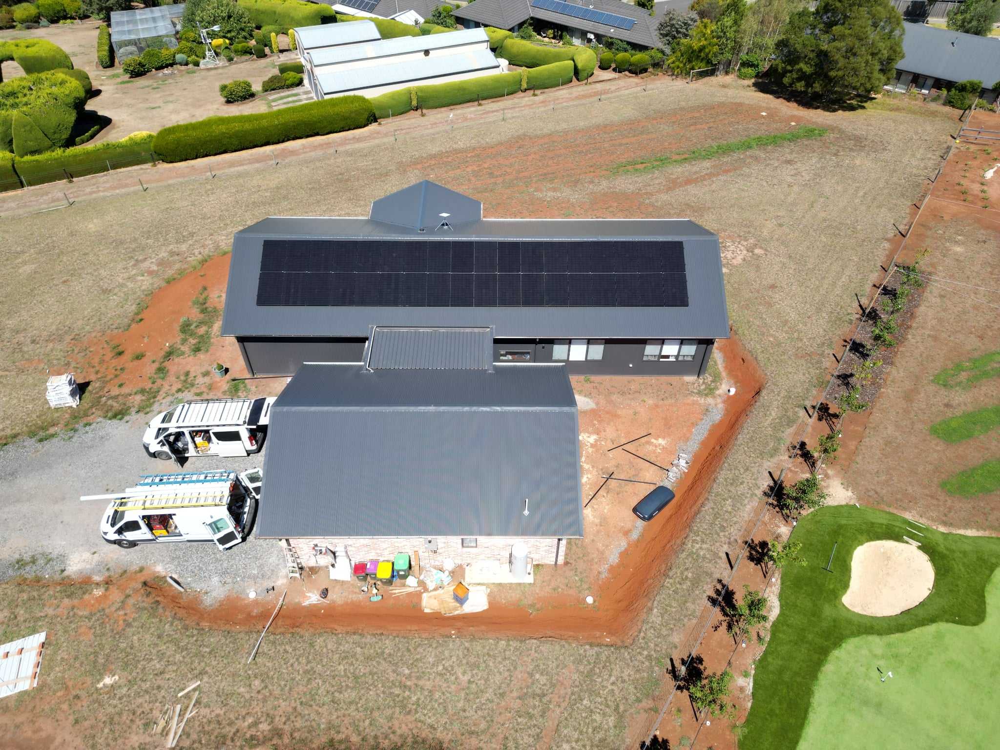

Why Install Solar?
In the modern world, the need for sustainable and renewable energy sources has become increasingly urgent. Among the various renewable energy options, solar power stands out as one of the most viable and accessible solutions. Solar energy is derived from sunlight, an abundant and inexhaustible resource, making it a reliable alternative to fossil fuels. As climate change concerns grow and energy costs rise, more homeowners and businesses are turning to solar power to meet their energy needs. However, while adopting solar energy is a step in the right direction, the quality of solar panel installation plays a crucial role in determining efficiency, longevity, and overall return on investment. This essay explores the importance of solar energy and why quality installation is essential for maximizing its benefits.
The Importance of Solar Energy
1. Reducing Energy Costs
One of the most significant advantages of solar panels is the reduction in electricity bills. By generating electricity from sunlight, homeowners can decrease their reliance on the grid, leading to lower monthly energy costs. Over time, the savings can offset the initial investment, making solar energy a cost-effective solution. Additionally, in many regions, excess electricity produced by solar panels can be sold back to the grid, further reducing costs.
2. Environmental Benefits
The environmental impact of fossil fuels, including greenhouse gas emissions and air pollution, is a major concern. Solar energy provides a clean and renewable alternative that significantly reduces carbon footprints. Unlike coal or natural gas, solar power does not produce harmful emissions, making it a key player in combating climate change. By transitioning to solar energy, individuals and businesses contribute to a healthier planet and help mitigate global warming.
3. Energy Independence
Relying on non-renewable energy sources exposes consumers to fluctuating prices and supply chain vulnerabilities. By installing solar panels, households and businesses gain greater control over their energy production. This reduces dependence on external energy providers and shields consumers from rising electricity costs. Moreover, with advancements in battery storage technology, solar users can store excess energy for use during nighttime or cloudy days, further enhancing energy security.
4. Increased Property Value
Properties equipped with solar panels tend to have higher market values. As energy efficiency becomes a priority for homebuyers, houses with pre-installed solar systems attract more interest. Studies show that homes with solar panels sell faster and at higher prices than those without. This makes solar installation a worthwhile investment not only for energy savings but also for property appreciation.
5. Government Incentives and Rebates
Many governments worldwide offer incentives to encourage the adoption of solar energy. These include tax credits, rebates, and feed-in tariffs that make solar panel installation more affordable. By taking advantage of these financial benefits, homeowners can reduce their initial costs and enjoy quicker returns on their investment.
6. Job Creation and Economic Growth
The solar industry has become a major contributor to job creation and economic development. The demand for solar panel manufacturing, installation, and maintenance has led to the creation of thousands of jobs worldwide. Supporting the solar industry not only helps the environment but also stimulates local economies and fosters technological innovation.
The Importance of Quality Installation
While the benefits of solar energy are clear, the effectiveness of a solar system depends heavily on the quality of installation. Poorly installed panels can lead to inefficiencies, system failures, and increased maintenance costs. Here’s why quality should be a top priority:
1. Maximizing Efficiency and Performance
High-quality installation ensures that solar panels are positioned correctly to capture maximum sunlight. Factors such as angle, direction, and shading can significantly impact energy generation. Professional installers assess these factors to optimize panel placement and enhance efficiency.
2. Longevity and Durability
Solar panels are designed to last 25 years or more, but improper installation can lead to premature wear and tear. High-quality materials, proper wiring, and secure mounting systems are essential to ensure the system’s durability. Investing in a reputable installer helps prevent common issues such as panel misalignment, loose connections, and exposure to weather-related damage.
3. Safety Considerations
Improper solar installation can pose serious safety hazards, including electrical fires and system malfunctions. Qualified installers follow strict safety guidelines to ensure that electrical components are properly connected, preventing short circuits and other risks. A well-installed solar system not only protects the homeowner but also the entire electrical grid from potential faults.
4. Warranty and Support
Reputable solar companies offer warranties that cover performance and maintenance issues. However, these warranties are often only valid if the panels are installed by certified professionals. Choosing a quality installer ensures that warranties remain intact, providing peace of mind in case of system failures or repairs.
5. Compliance with Regulations
Different regions have specific building codes and regulations for solar panel installation. Certified installers are knowledgeable about these requirements and ensure that the system complies with all legal standards. This prevents future legal complications and ensures eligibility for government incentives and rebates.
6. Optimized Battery Integration
With the rise of solar battery storage solutions, proper integration with solar panels is essential. A well-installed system seamlessly connects with batteries, allowing homeowners to store excess energy for later use. Poor integration can lead to energy loss and inefficient storage, reducing the overall benefits of solar energy.
Solar energy is a crucial component of the transition towards a sustainable and self-sufficient future. Its environmental, economic, and financial benefits make it an attractive choice for homeowners and businesses alike. However, to fully reap these benefits, quality installation is essential. A well-installed solar system maximizes efficiency, ensures safety, and enhances longevity. As solar technology continues to evolve, investing in high-quality installation remains the key to unlocking the full potential of this renewable energy source. By prioritizing quality, we not only secure energy savings but also contribute to a cleaner and more sustainable world.